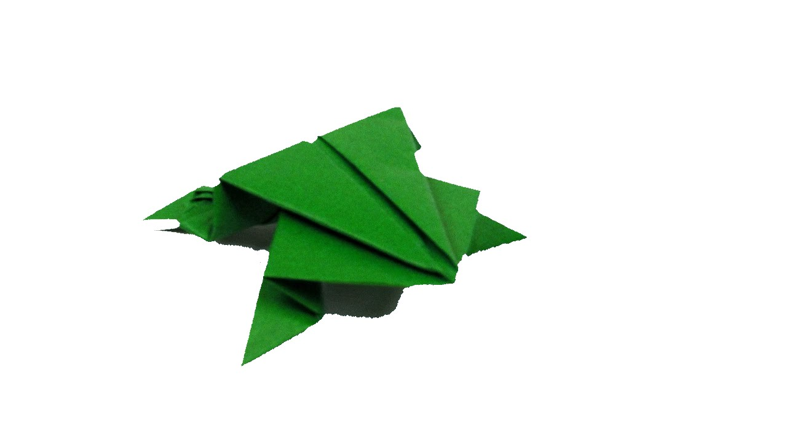

Learn How to make Camel using Origami

https://www.youtube.com/watch?v=qh7Zg88FsMM
Interesting Facts about Camel
- There are two types of camels: One humped camels and two humped Bactrian camels.
- Camels have three sets of eyelids and two rows of eyelashes to keep sand out of their eyes.
- Camels have thick lips which let them forage for thorny plants other animals can't eat.
Learn How to make Chameleon using Origami

https://www.youtube.com/watch?v=d2V4BgM_5JU
Interesting Facts about Chameleon
- Chameleons are reptiles that are part of the iguana suborder.
- Chameleons mainly change color in order to communicate or regulate body temperature.
- Chameleons vary wildly in terms of size.
Learn How to make Pigeon using Origami

https://www.youtube.com/watch?v=beyzDR2dHh8
Interesting Facts about Pigeons
- Pigeons are incredibly complex and intelligent animals.
- Pigeons are renowned for their outstanding navigational abilities.
- Pigeons have excellent hearing abilities.
Learn How to make Teddy Bear using Origami

https://www.youtube.com/watch?v=3DNxCN4gYa4
Interesting Facts about Teddy-bear
- A teddy bear is a stuffed toy in the form of a bear.
- The name teddy bear comes from former United States President Theodore Roosevelt, who was commonly known as "Teddy".
- Teddy bears are a favourite form of soft toy for amateur toy makers, with many patterns commercially produced or available online.
Learn How to make Panda using Origami

https://www.youtube.com/watch?v=nnZ61pDj5E4
Interesting Facts about Pandas
- A giant panda is much bigger than your teddy bear.
- Giant pandas are good at climbing trees and can also swim.
- Pandas go from pink to white and black (or brown).
Learn How to make Cicada using Origami

https://www.youtube.com/watch?v=6pcESa87KOE
Interesting Facts about Cicada
- The name is directly from the onomatopoeic Latin cicada.
- Cicada nymphs drink sap from the xylem of various species of trees, including oak, cypress, willow, ash, and maple.
- They have the usual insect modes of locomotion, walking and flight.
Learn How to make Frog using Origami
https://www.youtube.com/watch?v=uj5t4klo-SA
Interesting Facts about Frog
- Frogs have long back legs and webbed feet for jumping and swimming.
- Frogs absorb water through their skin so they don't need to drink.
- Frogs can lay as many as 4,000 eggs in frogspawn.